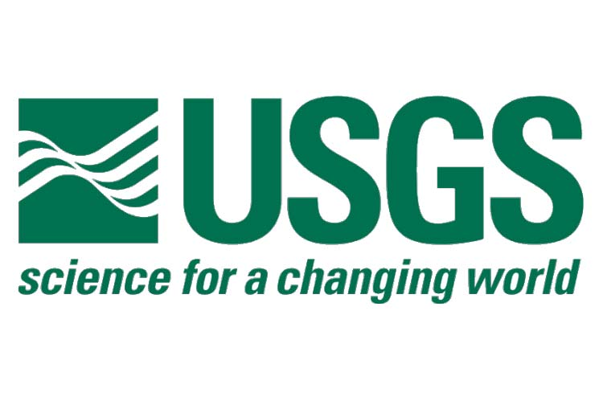

I began working at the United States Geological Survey as a student contractor when I was a senior in college. My role was as a software developer working on their internal product tracking system (PTS 3.0).
The project was web based using Django Python on the backend and a PostgreSQL database. I worked on a small team of developers and participated in daily scrum meetings to go over goals and new project needs, and bi-weekly
sprint planning sessions to set out longer term goals.
I mainly worked on smaller scale additions to the website by myself, implementing different data visualation tools and retrieval routines. It was an incredibly educational
experience for me, to not only grow my skills as a software developer, but to also see what a real professional coding project looked like and how it worked from the inside,
which I hadn't gotten up to that point.
Reference: Scott Owens | sowens@usgs.gov